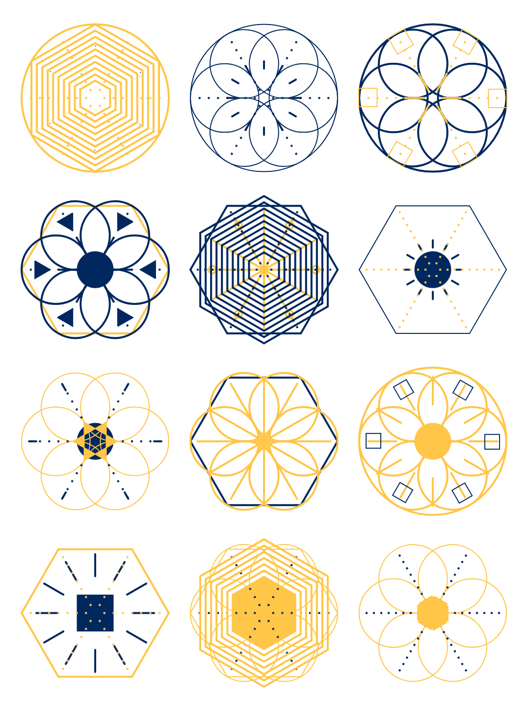

The other day I finally had the chance to watch Matthew Epler’s fantastic Youtube series Designing Generative Systems with p5.js. He takes you from setting up your p5 sketch to a full-fledged generative design system that creates crystals like these:
Here I want to go into a bit of detail on what I learned and changed in the course of implementing this crystal generator. Please feel free to check out the accompanying Glitch app or the source code on Github.
random FunctionThe whole design system is based on using p5’s random function—a lot! We randomly choose color, shape, arity, stroke weight… you get the picture. Matthew had to implement this notion of choice from nothing but random float numbers which lead to helper functions like these:
Today we can call random with an array and get a random element back. No more helper functions needed:
I really appreciated that Matthew takes his time to shed some light on code organization, refactoring, and implementation best practices. Still, he heavily relies on global variables that he reuses in all his files and classes. I wanted to take things a bit further and settled with an implementation where
Layer classsetup, draw, and windowResized functions, everything else is passed down to the instantiated objects as parameters of the constructor callSee my Circles class, for example:
A lot of the perceived variety in the crystals above stems from using hexagons and triangles of different size and direction. Instead of writing two helper functions hexagon and triangle and implementing one-off if guards to decide which direction they should have, I decided to go for one helper function polygon with an optional angle offset (where n is the number of sides, x and y are the position, and r is the radius):
That way I was able to generate all needed shapes with just one function, passing in angleOffset if I needed to:

Better yet, this solution scales in case I decide to include pentagons or triangles with all sorts of directions in the future.
Instead of going for a fixed 3×4 grid of crystals I wanted to come up with a simple grid placement algorithm that uses the full viewport available. It works like this:
[code language="javascript"] const CRYSTAL_SIZE_MAX = 150 // 1. const GAP_MIN = 10 // 1. const crystalSize = min(CRYSTAL_SIZE_MAX, min(windowWidth, windowHeight) - 2 * GAP_MIN) // 2. const cols = int((windowWidth - GAP_MIN) / (crystalSize + GAP_MIN)) // 3. const rows = int((windowHeight - GAP_MIN) / (crystalSize + GAP_MIN)) // 3. const gapHor = (windowWidth - cols * crystalSize) / (cols + 1) // 3. const gapVer = (windowHeight - rows * crystalSize) / (rows + 1) // 3. for (let i = 0; i < cols * rows; i++) { // 4. const x = gapHor + crystalSize / 2 + (i % cols) * (crystalSize + gapHor) const y = gapVer + crystalSize / 2 + int(i / cols) * (crystalSize + gapVer) new Crystal(x, y, crystalSize).render() } [/code]CRYSTAL_SIZE_MAX and GAP_MIN are the crystal’s maximum size and the minimum gap (serves both as margin between crystals and padding of the canvas) in pixels%, so we can do it in one for loop instead two nested loops for columns and rows)Fortunately, p5 already ships with a handler that automatically calls the draw function if the window is resized. All we need to do is resize the canvas and we got a fully responsive crystal grid: